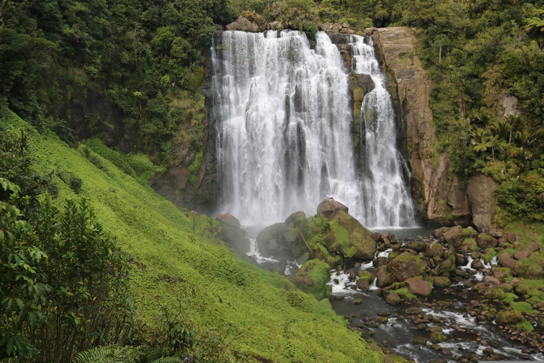

Marokopa Waterfall
Waikato Tourist Location
One of the Waikato's Most Beautiful Waterfalls!
Marokopa Waterfall is a spectacular natural attraction located in the
Waikato region, surrounded by native New Zealand bush. The waterfall
drops approximately 35 metres into a rocky pool below, creating an
impressive sight for visitors exploring the area.
Visitors can reach the waterfall by following a short walking track
through the surrounding forest. The walk provides an opportunity to
experience native plants and wildlife before reaching the viewing
area, where visitors can enjoy views of the waterfall and take
photographs.
Marokopa Waterfall is a great destination for people who enjoy
nature, photography, and walking. The attraction is also a good
option for travellers looking for an inexpensive activity, as there
is no general admission fee. However, visitors should consider
transport and food costs when planning their trip.
Facts:
- Located in the Waikato region
- Approximately 35 metres tall
- Surrounded by native New Zealand bush
- Accessible via a short walking track
- Popular location for photography
- Great destination for nature lovers
- Free to visit
Costs:
- Entry to Marokopa Waterfall: Free
- Walking track: Free
- Estimated food costs: $10-$30 per person
- Estimated fuel costs: $20-$50 depending on starting location
- Estimated total visit cost: $30-$80 per person